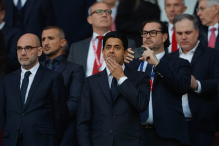
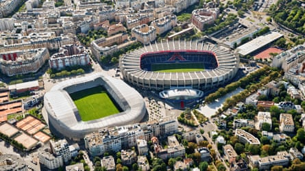

“ Ici, c’est Paris ” has been the rallying chant of Paris Saint-Germain supporters since the beginning of the 21st century. It has also become an advertising slogan for the club, who appropriated it to the fury of the ultras, who had trademarked it and have launched a lawsuit in response. But fans and marketing consultants, unless they do not fear ridicule, will not be able to use it once PSG carry out their plan to vacate the Parc des Princes, their home since they were promoted to Ligue 1 in 1974.
“It’s over now,” PSG’s president, Nasser al-Khelaifi, told reporters in March. “We want to move.” This was confirmed in a statement on 10 June, the day the newly crowned European champions flew to California and the Fifa Club World Cup. “I like the Parc a lot,” Khelaifi, known in France as Nak, said of the 48,583-capacity arena. “Everyone loves it. But [if we stay], we’re dead. In Europe, all the big clubs have 80,000- or 90,000-seat stadiums. If we want to be at that level for our supporters, the stadium must be expanded.” And because an expansion of the stadium is out of the question, it is likely that “Paris” (as the club love PSG to be called in the media) will no longer play in Paris by the time the decade is over, but in one of two towns of the grande banlieue , Massy or Poissy. We will know which come November 2026.
Very few professional clubs still play in the stadium where they hosted their first game, Chelsea’s Stamford Bridge being among the exceptions. Moving from arenas which had become too old or small is in the natural order of things if clubs have not redeveloped, as Chelsea did, but they have usually then built the new venue as close as possible to their community, as Athletic Club, Tottenham and Arsenal have done. When a lack of available sites has forced clubs to move further from their historic home, efforts have been made to remain as close as possible: Bayern’s Allianz Arena is less than a quarter of an hour’s drive from their first proper ground on Leopoldstrasse and the Olympiastadion, where they played until the beginning of the 2005-06 season.
PSG’s case is different. It is as if Arsenal, when the time came to say goodbye to Highbury, had moved to Bromley, or even further. Of the two shortlisted sites, Massy is closer to the capital but still lies more than 11 miles south of the Parc des Princes. Poissy is two miles further to the north-west. It must be remembered that the périphérique , the ring road which girdles the city, acts as a cultural as well as a physical barrier between what is Paris and what is not. The Parc lies on the outskirts of the 16th arrondissement but remains intra muros. Massy and Poissy are not Paris and never will be, whatever PSG fans may sing when they get there.
Nasser al-Khelaifi, the PSG president, says the club are ‘dead’ if they stay at the Parc.Photograph: Tom Jenkins/The Guardian
Khelaifi will argue that there is no alternative. The Parc remains the property of the Ville de Paris, which leases it to the club in a deal (intended to run until 2044) worth €2m a season and has no intention of selling it. “The Parc is [and must remain] a part of the Parisian heritage which belongs to all Parisians,” the deputy mayor of Paris, Patrick Bloche, told Le Parisien last October. What he did not add was that a sale to the club had been envisaged in the past, but that the local authority had discovered that PSG’s plans included the transformation of a huge area – about 50 hectares – around the stadium to create an entertainment complex. From then, any hope of reconciliation between the club and the town hall was impossible, especially because, according to the councillor Pierre Rabadan, the last PSG offer for the Parc, made this year, was €38m, not much more than a tenth of what the local authority was expecting and a pittance compared with the billion the club’s Qatari owners are said to be prepared to spend for their new stadium.
It is a risky move for PSG. The supporters won’t like it. The Parc is where their club were born and made history. It is within easy reach of the banlieues of Seine-Saint Denis, where so many of them come from. The neutrals will miss the instantly recognisable bowl and its rib-like concrete projections; the Parc, with its strange, unique, retro-futuristic feel, was an amplifier of emotions which not everyone could live with. Replicating it will be impossible.
Paris FC are moving into the Stade Jean-Bouin, a street away from the Parc des Princes.Photograph: Robbert Frank Hagens/Alamy
It is also risky because, next season, Paris will no longer be the one-club city it has been since 1990, when Jean-Luc Lagardère’s Matra Racing, once home to players such as Luis Fernández, Pierre Littbarski and Enzo Francescoli, fell from the elite and sank into oblivion. The newcomers are Paris FC, who have gained promotion to Ligue 1 . The club were founded in 1969 and have been controlled since last autumn by Bernard Arnault, the founder and chief executive of the LVMH group and the sixth-richest person in the world according to Forbes, with a fortune of more than €150bn. The acquisition of PFC is not a billionaire’s whim; that another key stakeholder in Paris FC is the Red Bull Football Group is a clear indicator of Arnault’s ambition. To add spice, Paris FC were one of the entities involved in the creation of PSG, only to regain their independence in 1972.
If this were not enough, as of next season, Paris FC will move into the home of Stade Français rugby club, the 20,000-seat Stade Jean-Bouin, separated from the Parc by a single street, the rue Claude Farrère, right under the nose of their powerful neighbours. PFC’s president and minority shareholder Pierre Ferracci has said that “at the moment” there is no intention to take residence in the Parc des Princes. “At the moment.” But come 2030, whose supporters will sing “ Ici, c’est Paris ”?